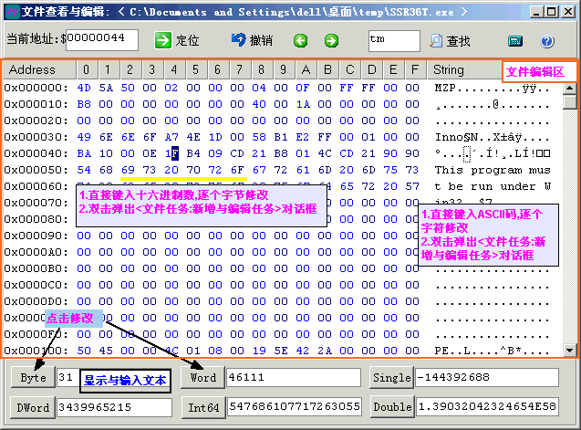

| 江湖行GamePaladin 帮助 _ 文件查看与修改 |
文件查看与修改 对话框是十六进制编辑器类似于 UltraEdit-32.

<定位>跳转到指定的文件地址
<查找>
(比如: 10000 表示搜索显示的十六进制数值: 01 00 00;如果你想搜索实际的值 10000
这样做:因为 10000=$2710 则输入 1027(记住不是2710) 然后点击 <查找>.)
你可以双击编辑器,加入/编辑指定的地址.
<撤销>撤销更改 .当在文件编辑区域内修改时才能撤销
注意 : 数据在文件中的存储格式 通常类似 内存中的数据的存储格式
参见